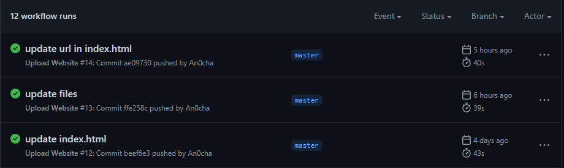

- Certification.
- HTML
I created a couple HTML pages. This is not that complicated task for me. I built this part from the ground up and it took me a couple of days to complete them all. I have to work on this project in the evening after my regular work hours.
-
CSS
I added some of the CSS features to HTML pages. This part is fun. I loved it LOL.
- Static Website. This part is easy enough. I registered domain name via Amazon Route53. Here is the link to Register a nwe domain on Amazon Route 53 that you can follow. I created 2 buckets for hosting static page. first bucket for apex dommain and second bucket for sub domain theh redirect set request redirect to from first bucket to second bucket which is sub domain.
- HTTPS, for this task I used AWS Certificate Manager(ACM). I requested 2 public certificatss for domain and sub domainusing this document from Amazon website.
-
DNS. Configuring Amazon Route 53 to route traffic to a CloudFront distribution. Here is the document for developer from Amazon. Here is a good video to follow along from Felix Yu on YouTube
-
javascript
Javascrip is included in menu secion.
-
IN PROGRESS >>>
-
IN PROGRESS >>>
-
IN PROGRESS >>>
-
IN PROGRESS >>>
-
Infrastructure as Code
I used AWS SAM
- Source Control. I used Git hub for Back end / Frond end API calls from my local computer.
-
IN PROGRESS >>>
- For CI/CD (Front end) I used GitHub repository for my website code and utilized Github Action for pusing new files to S3 bucket.
- Blog post is on this page
I have AWS Cloud Solutions Architech Associate. I studied for the exam using resource on Udemy taught by Neal Davis(DigitalCloudTraining). The digital badge is here
